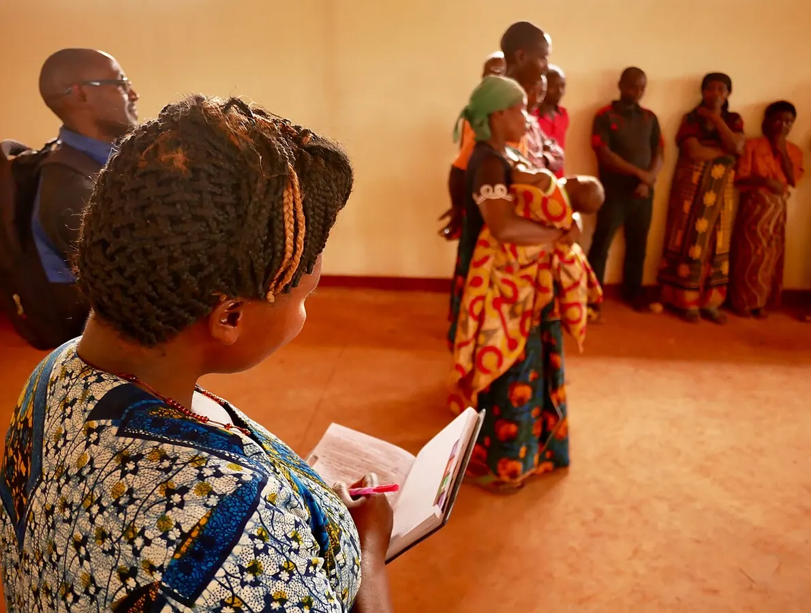

Démonstration · contenu fictif
Comprendre les lieux. Accompagner leurs transformations.
Nous réunissons les savoirs et les expériences pour aider les territoires à construire leur avenir.

Expertises
- Observer
- Enquêtes et diagnostics
- Transmettre
- Formations et ressources
- Accompagner
- Projets locaux